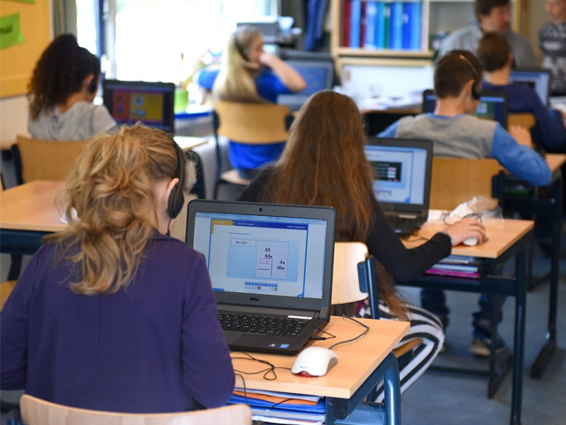
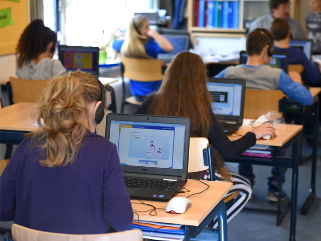

¿EN QUE AYUDO EL INTERNET DE LAS COSAS?
En el caso de este importante sector. El impacto que tendrá esta nueva tecnología será mayúsculo. Hablamos de las plataformas de educación en línea, de los sistemas de aprendizaje adaptativo – los cuáles plantean ejercicios que adaptan al ritmo de los estudiantes y los ayudan a mejorar su comprensión de los temas que les cuesta aprender –, y hasta de innovaciones potencialmente revolucionarias como la realidad virtual. Sin embargo, existe un área en la que la tecnología está avanzando rápidamente y que, a pesar de su enorme potencial transformador, rara vez es vinculada al ámbito educativo. Se trata por supuesto de la Internet de las cosas. Uno de los primeros campos en los que estas nuevas tecnologías están teniendo un impacto es en la reducción de la carga laboral de los docentes. Cada vez más dispositivos, están ayudando a los docentes a alivianar algunas de las tareas más tediosas vinculadas con su actividad.
PRUEBAS
 



CASOS QUE MEJORARON GRACIAS AL IoT
Mediante el uso de los sistemas de videoconferencias disponibles en computadoras o equipos móviles con facilidad de cámaras de video incorporadas es posible impartir la enseña a puntos distantes. Este tipo de formación remota está teniendo alta demanda y en ese sentido existen muchas aplicaciones o programas en el mercado.
Consiste en el intercambio de información entre estudiantes y profesores a través del correo electrónico, para ello se asignan los trabajos y se establecen los procedimientos para las preguntas, respuestas y consultas. En el caso de los tutoriales se indican enlaces o rutas de acceso a videos sobre temas particulares con los paso a paso que deben hacer los alumnos.
Es una dirección electrónica del tipo URL, con un subdominio (www) y dominio (.com, .net, .org) donde se coloca información de textos, numérica e imágenes para las diferentes categorías académicas (asignaturas) que elaboran los profesores o docentes y dejan a la disposición de los alumnos para organizar el estudio, programación, apuntes, enlaces a otras páginas y los sistemas de evaluaciones.
Son centros de almacenamiento de datos electrónicos organizados de manera tal que sea fácil su búsqueda y generar reservas para su lectura en línea, algunas otras ofrecen facilidades para descargas de documentos. También existen sitios en el Internet que proporcionan material didáctico, cursos, fórum de discusión y asesoramiento en línea.
Son plataformas y medios que ejecutan cursos o programas de formación académica de a través de medios telemáticos en computadoras o dispositivos móviles, estas áreas de transferencias de conocimientos y saberes aprendidos son certificadas, y a su vez son reconocidas como válidas en el campo laboral y empresarial.